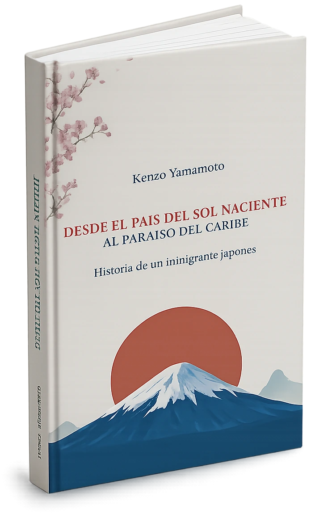
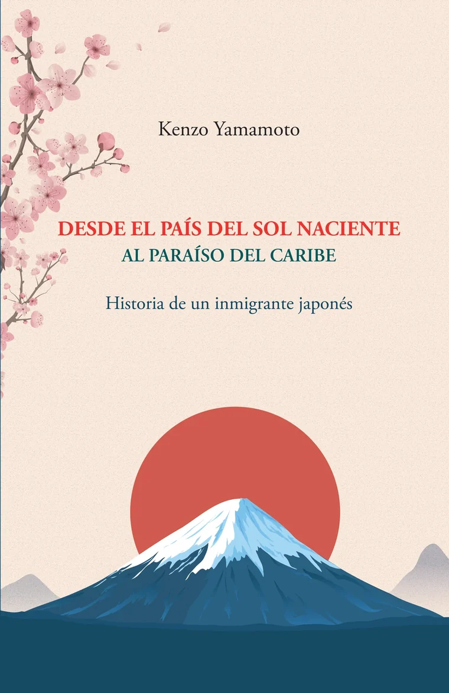
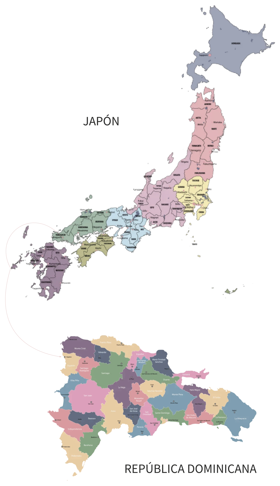

Memoria de la inmigración japonesa en la República Dominicana
El testimonio de primera mano de una de las familias que llegaron a las colonias japonesas de la República Dominicana.
Primera edición · Kenzo Yamamoto
Historia de un inmigrante japonés
De Tokuyama, en la prefectura de Yamaguchi, a la Colonia Japonesa No. 27 de La Vigía, Dajabón. El testimonio de una vida repartida entre dos tierras, escrito como legado para la comunidad dominico-japonesa.

La historia de un inmigrante japonés que encontró en dos tierras la riqueza de una sola vida.
El libro

En su primera obra, Desde el país del sol naciente, Japón, al paraíso del Caribe, República Dominicana, el autor relata, a grandes rasgos, sus vivencias en ambas naciones, destacando las riquezas y enseñanzas que le ha brindado el privilegio de compartir dos culturas. Junto con su esposa, sus cuatro hijos y sus seis nietos, agradece la vida que ha construido y que considera una verdadera bendición.
Con un estilo llano y cercano, Kenzo Yamamoto comparte experiencias que marcaron su existencia y, al mismo tiempo, procura dejar un legado para sus hijos y para la comunidad dominico-japonesa. A través de un recorrido por su memoria, evoca a sus antepasados, su infancia en Japón y su posterior vida en la República Dominicana, reconociendo con gratitud y respeto tanto la patria que lo vio nacer como la que lo acogió como un hijo.
奥付 Ficha del libro
El autor
Nació el 17 de noviembre de 1949 en la ciudad de Tokuyama, prefectura de Yamaguchi, Japón. Sus padres, Fukutsuchi y Shigeko Yamamoto, llegaron a la República Dominicana el 29 de julio de 1956 y se establecieron, junto con sus hijos, en la Colonia Japonesa No. 27, La Vigía, Dajabón, ubicada cerca de la frontera con Haití, en el noroeste del país.
Es ingeniero electromecánico egresado de la Universidad Católica Madre y Maestra (UCMM), con especialización en el área automotriz de la marca Toyota, realizada en la empresa Toyota, en Japón. Ha realizado múltiples estudios técnicos y es un apasionado del deporte, destacándose en el judo y el béisbol, disciplinas en las que ha recibido diversos reconocimientos.
Amante de la música, la poesía y la escritura, considera esta última una actividad que abre las puertas a un mundo infinito, al permitirle plasmar con sensibilidad sus pensamientos y despertar en el lector interés, reflexión y empatía.
Dos culturas
De una isla del Pacífico a una isla del Caribe. Este es el recorrido que dio origen a la historia que cuenta el libro: el de una de las familias de la inmigración japonesa en la República Dominicana, que en 1956 se estableció en las colonias agrícolas del noroeste del país.

日本Japón ドミニカ共和国República DominicanaKenzo nace el 17 de noviembre en el sur de Japón, en el país del sol naciente.
El 29 de julio, sus padres Fukutsuchi y Shigeko llegan con sus hijos a la República Dominicana.
La familia se establece en Dajabón, cerca de la frontera con Haití, en el noroeste del país.
Con su esposa, cuatro hijos y seis nietos, Kenzo deja por escrito la memoria de las dos tierras que lo formaron.
Dentro del libro
El testimonio de primera mano de una de las familias que llegaron a las colonias japonesas de la República Dominicana.
Dos maneras de entender el trabajo, la familia y la gratitud, conviviendo en una misma vida.
Escrito sin adornos, como quien conversa: vivencias, anécdotas y enseñanzas contadas con sencillez.
Páginas escritas para sus hijos, sus nietos y toda la comunidad dominico-japonesa.
Palabras del autor
Desde los inicios de mis estudios estuve en centros formativos más enfocados en lo técnico, que en las materias liberales, como la filosofía, literatura o la historia, razón por la que considero tenía debilidades con relación a esas áreas. En tal sentido, un evento fortuito marcó mi quehacer en la lectura y escritura: lo fue el desconocer el significado de la palabra obstinado, la cual me fue expresada en mis años de juventud por una compañera de trabajo; en ese momento no supe qué responder, y al buscar dicha palabra en el diccionario, me sentí impotente por no haber podido responder.
De ahí en adelante se desarrolló en mí un ansia indescriptible por la lectura, lo que me llevó a ampliar mi vocabulario, descubrir la magia de un buen libro y de poder expresar a través de un escrito mis sentimientos, además de que la lectura te empodera de un espíritu creativo, que te dota de herramientas sin límites para presentar o describir cualquier panorama real o imaginario, solo limitado hasta dónde llega la mente humana.
Escribir eleva la imaginación, impregnándola de colores, sabores, paisajes, sentimientos y vivencias que te llevan a otro nivel de realización personal.
Gracias a ello, hoy puedo presentarles este manojo de palabras, que no buscan más que testimoniar una vida, mi vida, como un legado a la comunidad dominico-japonesa, a mi familia y a todo lector interesado en la grandeza de la fusión cultural.
Espero lo reciban con el mismo amor y entusiasmo con que fue escrito.
Pedidos
Llena la papeleta y el pedido se envía por WhatsApp, ya escrito. Ahí te damos toda la información: formas de pago, envío a tu provincia, tiempos de entrega y cualquier duda que tengas.
Preguntas frecuentes
Son las memorias de Kenzo Yamamoto, un inmigrante japonés que llegó de niño a la República Dominicana en 1956. El libro recorre su infancia en Tokuyama, la travesía de su familia, la vida en la Colonia Japonesa No. 27 de La Vigía, Dajabón, y lo que significó crecer entre dos culturas. Son 207 páginas que reúnen, a la vez, un testimonio de la inmigración japonesa en la República Dominicana y un retrato de la cultura dominico-japonesa.
Sí. Es un relato autobiográfico: el autor cuenta su propia vida y la de su familia, con fechas, lugares y personas reales. No es una novela.
RD$ 1,200 por ejemplar. Si el pedido lleva envío, el costo depende de la provincia y te lo confirmamos por WhatsApp antes de despachar.
El pago se acuerda directamente por WhatsApp. Escríbenos y te indicamos las formas disponibles para que elijas la que mejor te convenga.
Coordinamos envíos dentro de la República Dominicana. Mándanos tu provincia por WhatsApp y te decimos cómo y cuándo te llega.
Sí. Marca la casilla de dedicatoria en la papeleta e indícanos el nombre de la persona. Es ideal para regalo.
Indica la cantidad en la papeleta. Para pedidos de bibliotecas, escuelas o instituciones, escríbenos por WhatsApp y lo conversamos.
Escríbenos por WhatsApp indicando tu país y buscamos la mejor forma de hacerte llegar el ejemplar.
¿Te quedó alguna duda? Toda la información te la damos por WhatsApp.
Escribir por WhatsApp